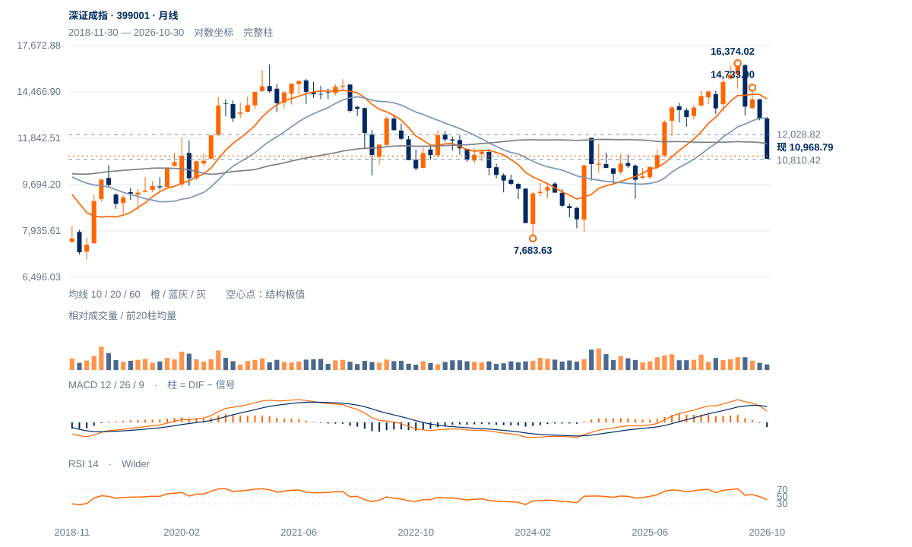

前低测试临近
10810是当前最重要的分界。弱势背景与回吐支持测试旧低，但距离过近也提高短线反抽可能；应先观察测试后的价格回收，而非预先确认破底。
10810是当前最重要的分界。弱势背景与回吐支持测试旧低，但距离过近也提高短线反抽可能；应先观察测试后的价格回收，而非预先确认破底。
未来2—6周倾向先检验10810，反弹以11198—11639为首段阻力区。原11613两日条件及11639中峰回收前，仍以下降中的反抽对待。
未来1—3个月能否守住10810—11003决定深度调整会否转入筑底。连续两周收低10810后，长期修复风险上升；9119是2025年远端低点，只作风险背景，现阶段没有直接跌到该处的确认形态。向上需先周收站稳12029半幅回撤。

展开图表 ↗2021高点16293.09与今年6月16374.02非常接近，但两者之间2024大低7683.63尚远，不能直接宣布五年双顶已经确认。更直接的事实是：2024低点至今年高点的涨幅已回吐62.20%，61.8%回撤11003.36就在现价附近；60月均线11567.58仍在上方，长线旧高突破未能保持。
6月高点后跌至7月13068.56，8月反弹至14733.90，9月再反弹至13914.20，随后下破前谷。较低高点与较低低点形成完整中期下降链条。现价离10810.42实际低点不足一个日常波动，趋势偏弱与支撑附近反抽必须同时考虑。
2021与2026同高区后的回落已很深，长期双顶仍缺中间大谷下破。当前更直接的检验是10810实际前低与11003长波回撤区。
11月5日11613.40峰在12日得到右侧确认；10月30日至5日反弹5.88%，之后六日跌4.38%，原反弹大部分进展被回吐。
现收10968.79，距原10810约158点，仅0.51个ATR；13日收盘位置9%，尚无前低附近明显回收。
近20日绝对跌7.06%，相对沪深300比值跌3.49%；OBV20方向余额为负。说明弱势不只来自大盘同步回调，需求修复仍落后。
先收回11198—11320，再按原11613两日及11639中峰检验升级。
10810失守撤销本轮守底解释。
61.8%回撤与实际前低相邻，弱势末段容易出现急反抽；若低位拒跌并连续收复11568，偏弱判断应降级。
| 周期 | 最后完整柱 | 图示柱数 | RSI14 | ATR14 | MACD柱 |
|---|---|---|---|---|---|
| 日线 | 2026-11-13 | 185 | 36.0713 | 312.92737 | 65.96794 |
| 周线 | 2026-11-13 | 156 | 26.94357 | 728.6486 | -319.67681 |
| 月线 | 2026-10-30 | 96 | 41.95498 | 1361.50077 | -261.48414 |
国内完整周线至11月13日；11月月线进行中。指数价格不复权，长期历史按实际可用起点。